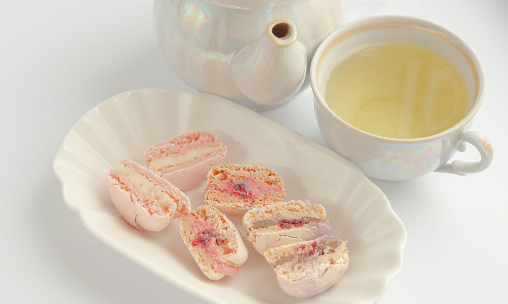
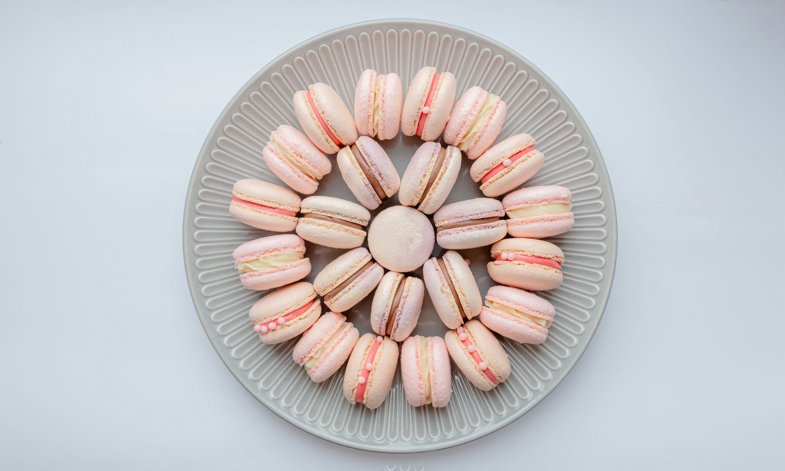
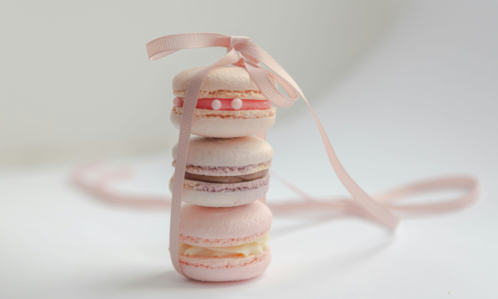
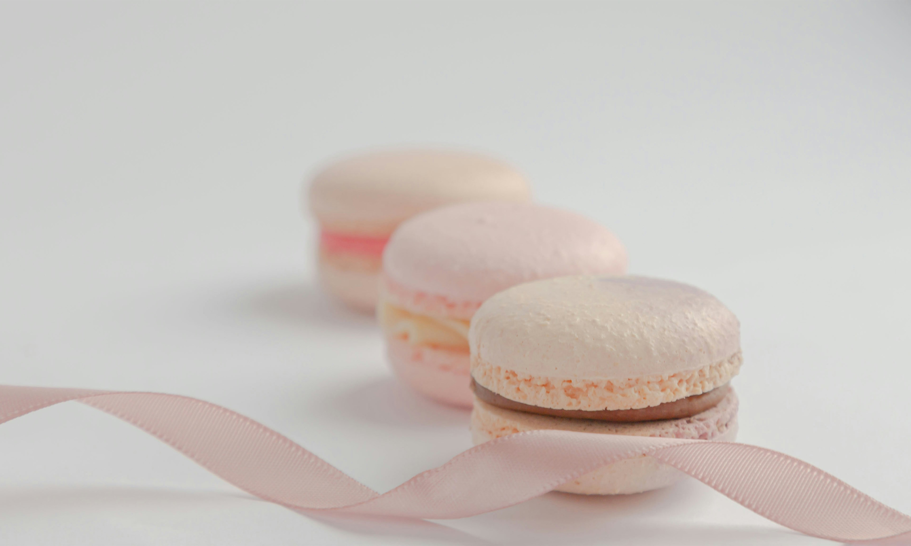
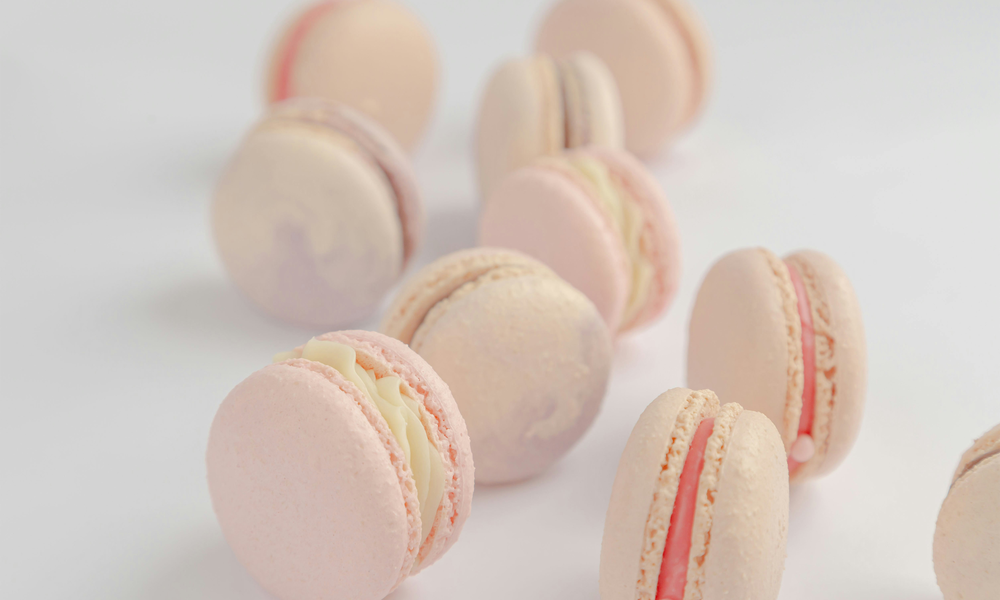
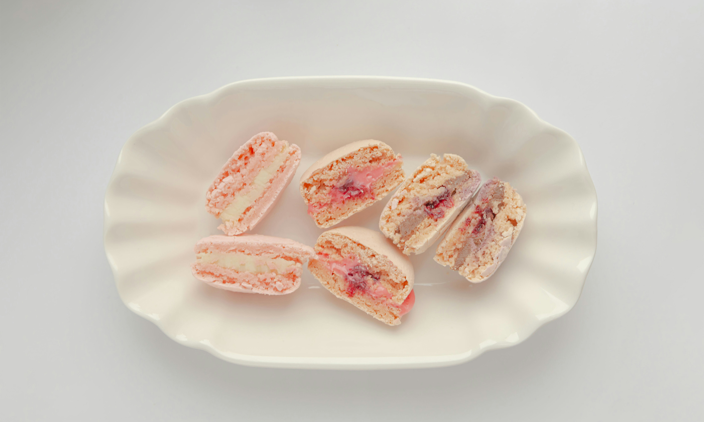
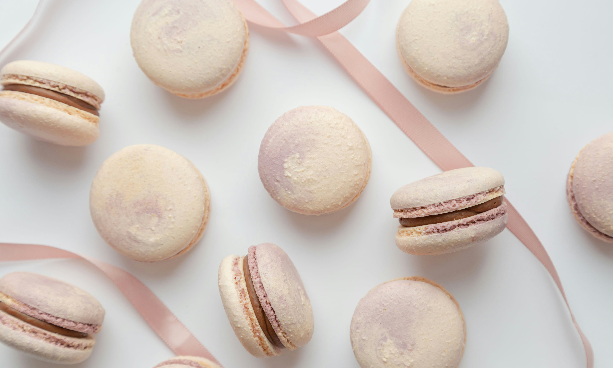
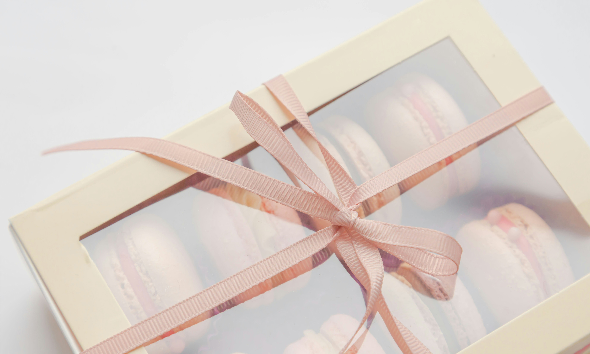

Delicate macarons reveal their perfect, airy interiors and rich fillings - a delightful
treat for any ocasion.

A beautiful array of macarons showcasing their vibrant colors and delectable fillings, ready
to tempt your taste buds.

Delicate and delightful, these macarons are a treat for both the eyes and the palate.

Elegant and tasty, these macarons are a luxurrious indlugence you deserve.

Handcrafted with love, these macarons are the epitome of French patisserie perfection.

A rainbow of flavors: these macarons are as delicious as they are beautiful.

Each macaron is a little masterpiece, perfect for any special occasion.

Perfectly baked macarons with a delicate crunch and a luscious filling - pure bliss in every
bite.